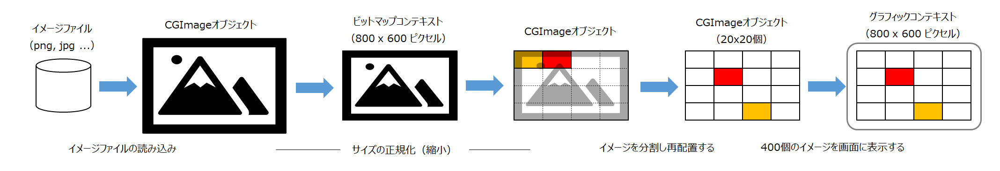
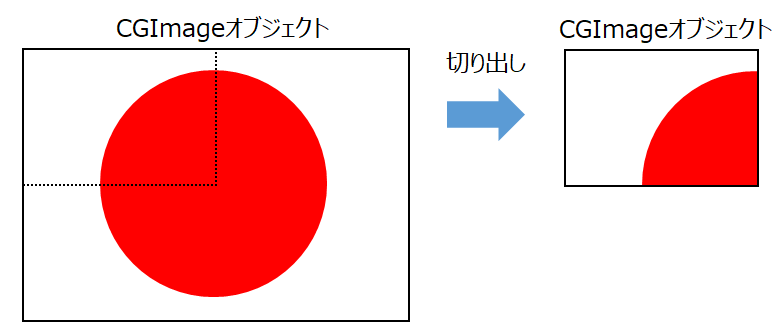
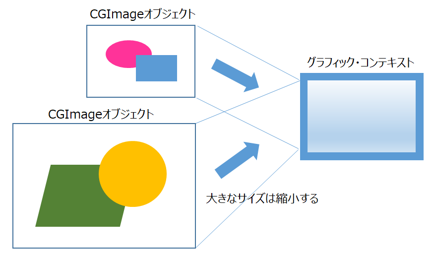
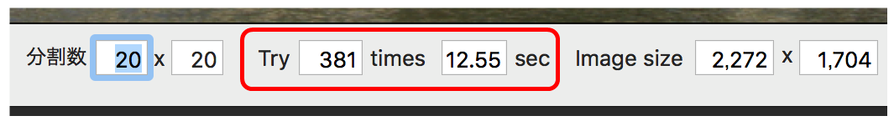
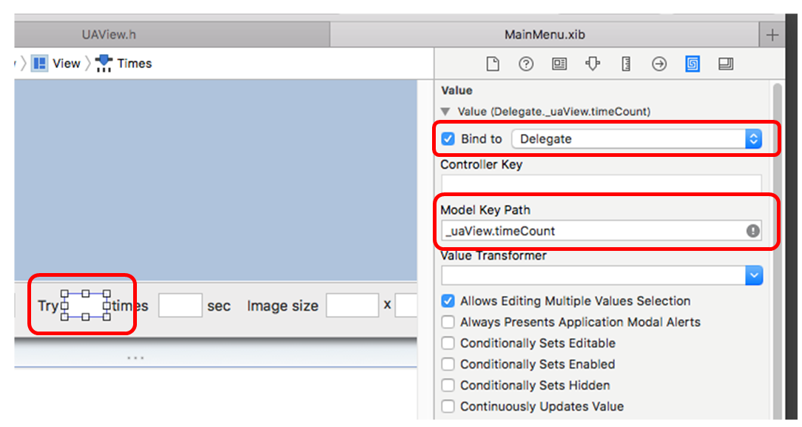

画像当てクイズ（初歩のCore Graphics）
使い方
NSOpenPanelを使用して、任意の画像ファイル（JPG or PNG）を読み込む。
画像イメージを２次元のマトリックスに分割し、ランダムな配置で表示する。この状態では何もわからない。分割数はユーザが指定できる。ここでは 20 x 20で分割。
開始ボタンで、ランダムなイメージの再配置が始まる。正しい位置に配置されたイメージはそのままに、それ以外のイメージを再度ランダムに配置する。これを全てのイメージが本来の位置に配置されるまで繰り返す。
時間とともに段々と本来の画像が姿を現してくる。ウィンドウにはイメージを再配置した回数と経過時間を表示する。途中で処理を中断/再開することができる。わかるまでの時間の早さを競うといったような感じ。（384回の試行で国宝松本城は完成した）
ソースコード
・アプリケーション制御
AppDelegate
・ビュークラス（イメージ処理本体）
UAView
・分割イメージクラス
ImagePart
処理の流れ

(1) CoreGraphicsクラスの関数によりイメージファイルを読み込み、CGImageオブジェクトを作成する。
(2) CGImageオブジェクトを 800 x 600ピクセルに収まるよう縦横比はそのままにイメージのサイズを縮小/拡大する。
(3) イメージを 20x20 のマトリックスに分割し、それぞれの部分イメージからCGImageオブジェクトを作成する。作成したオブジェクトをランダムに二次元配列に配置する。
(4) 配列に格納したCGImageオブジェクトを、CGContextDrawImage関数により、一つづつグラフィックコンテキストに出力する。
(5) イメージの再配置と再表示を繰り返す。2回目以降の処理では、配列の正しい位置に配置されたイメージは再配置の対象外とする。これにより繰り返し処理が進むにつれ正しい位置に配置されたイメージの数が増えていき、最終的には画像が完成する。
イメージファイルを読み込む
イメージファイル（jpg, png）を読み込み、CGImageオブジェクトを作成する。
上記と同じ処理だが、イメージファイルを一度 NSImageオブジェクトに読み込ん後、CGImageオブジェクトに変換している。
イメージを拡大/縮小する
![[image05]](/lib/HTMLofImage.html?filename=/data/42/image05.png&title=image05&width=700)
イメージを拡大/縮小するには CGImageオブジェクトを一度ビットマップコンテキストに落とし込み、そこから再び読み出すという手順を踏む。コンテキストに落とし込むところでサイズの変更を行う。以下は不定なサイズのCGImageオブジェクトを 800x600ピクセルのオブジェクトに変換する例
メモ：NSImageクラスにイメージにサイズを変更するメソッド（setSize）があるが、これは一時的にサイズを変更するだけで、元のイメージ（CoreGrapficsオブジェクト）のサイズを変更するものではない。
部分イメージを作成する

CGImageオブジェクトから、部分の位置と大きさを指定し、新しいCGImageオブジェクトを作成する。
イメージを表示する

NSViewクラスの drawRectメソッドの中で、スクリーンのグラフィックコンテキストを取得し、CGContextDrawImageメソッドによりCGImageオブジェクトを出力する。イメージのサイズがコンテキストのサイズと異なる場合、コンテキストサのイズの大きさに合わせて拡大・縮小される。
グラフィックコンテキストのインタフェースは、スクリーンの他に、ビットマップメモリ、PDF、プリンターといったイメージを表示する媒体も持つ。
NSTimerクラスによる定時処理の起動
NSTimerクラスは、メソッドを定時間隔に起動する手段を提供する。
NSTimerクラスのオブジェクトを作成し、起動するメソッド名（@selector形式）、起動間隔（秒）、付加情報（辞書オブジェクト）を設定する。fireメソッドにより指定したメソッドがメインスレッド上で起動する。メソッドの起動を停止するには、invalidateメソッドを実行する。
メソッドはNSTimerオブジェクトを引数として受け取る。メソッドには独自の引数を定義することはできないが、付加情報を介して情報の受け渡しをすることができる。
キー値コーディングによるプロパティ値の変化の監視
本アプリケーションでは、イメージの再配置の回数と経過時間をメインウィンドウのテキストビューにリアルタイムで表示する。

これはキー値コーディング（KVC）により実現している。
実装手順は、まず、インタフェースビルダーで、テキストフィールドの times（実行回数） と sec（経過時間）を UAViewクラスの timeCountプロパティと elapseSecプロパティにバインドする。

次に、UAViewクラスで、実行回数と経過時間をプロパティに加算している部分を下記のメソッドで囲む。これによりプロパティの値を監視し、変化する回数と経過時間をリアルタイムにテキストビューの値に反映させることができる。
パフォーマンス上の注意点
グラフィックコンテキストにイメージを描き出す CGContextDrawImageメソッドは、条件により処理時間に差が出る。
描画イメージのサイズとコンテキストの表示領域のサイズが異なる場合、処理が若干遅くなる。イメージの縮小・拡大にコストがかかっていると考えられる。
本アプリケーションでは、イメージをランダムに配置するため、元のイメージを 400 ( 20 x 20 ) イメージに分割し、それらをひとつづつ、800x600 のグラフィックコンテキストのランダムな位置に描画している。元のイメージが 800x600 であれば、分割イメージをコンテテキストに出力するときサイズの変更はないが、それ以外の大きさだと、分割イメージのサイズを変更する必要がある。
描画を400回繰り返すとなるとかなりの影響を受けるため、本アプリケーションでは、元のイメージを事前に 800x600 のサイズに正規化する対応をとっている。
以下に、この対応をした場合としなかった場合の処理時間の差を示す。
[ 処理A ]
あらかじめ元のイメージを 800x600 のサイズに縮小しておく。
[ 処理B ] 元のイメージのサイズはそのままとし、コンテキスト出力時に縮小する。
イメージのサイズ 2,272 x 1,704 → 800 x 600（縮小率35%）
処理A：0.029817 sec
処理B：0.155520 sec
イメージのサイズ 5,184 x 3,456 → 800 x 533（縮小率15%）
処理A：0.036741 sec
処理B：0.383116 sec